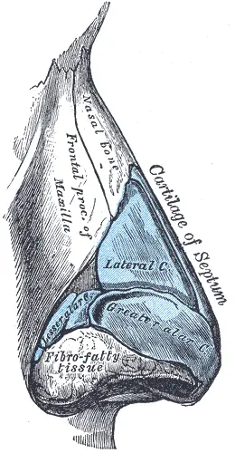

DX.3 — Fracture des os propres du nez
Le diagnostic de la fracture nasale isolée reste clinique : le protocole des Hôpitaux universitaires de Genève (HUG) refuse la radiographie standard systématiqueS1. Le danger réel se cache dans la cloison : un hématome septal impose un drainage par l’ORL dans les 24 heuresS1. Une réduction utile se programme vers le 7e jour, car la fracture se consolide dès le 10e au 14e jourS1.
1. Définition
La fracture des os propres du nez rompt les deux lames osseuses qui forment le tiers supérieur de la pyramide nasale, parfois avec le processus frontal du maxillaireS4. Le protocole genevois des HUG, version du 28 janvier 2020, la distingue de la contusion nasale, où le choc ne rompt aucun osS1. Il la qualifie d’isolée lorsqu’aucune autre fracture faciale ne l’accompagne, et d’associée lorsqu’une fracture orbitaire, zygomatique, sinusienne, dentaire ou de type Le Fort coexisteS1. La fracture devient ouverte lorsqu’une plaie cutanée ou muqueuse met le foyer en contact avec l’extérieurS1.
2. Épidémiologie (Suisse, puis Europe)
Les os propres du nez constituent la fracture faciale la plus fréquente, selon l’équipe de chirurgie plastique de l’Hôpital universitaire de ZurichS10. À Berne, la fracture nasale touche 19,1 % des 188 personnes âgées de 65 ans ou plus admises sous anticoagulant ou antiplaquettaire pour un traumatisme facialS6. Parmi 184 adultes traités à Hambourg en 2023–2024, 55,4 % sont des hommes, et l’âge moyen avoisine 56 ansS8. Les mécanismes selon l’âge, l’histoire naturelle et le coût en santé publique orientent la prévention du point 12.
3. Physiopathologie
La fracture ne se comprend qu’avec l’architecture du nez : un toit osseux rigide, une voûte cartilagineuse mobile et une cloison nourrie par sa muqueuse. La fenêtre Base à connaître montre ces repères sur deux planches anatomiques annotées. Un choc frontal provoque l’enfoncement du dos ; un choc latéral provoque la luxation d’un os propre en dedans et de l’autre en dehorsS2. Le sang décolle le mucopérichondre, prive le cartilage septal de sa nutrition et peut le nécroser jusqu’à l’ensellureS3. La cascade en quatre temps et le tableau de corrélation relient chaque lésion à son examen et à son traitement.
4. Démarche diagnostique
Le médecin écarte d’abord ce qui tue ou aveugle : détresse respiratoire, épistaxis massive, brèche du liquide cérébrospinal (LCR) et atteinte de l’orbiteS1. Il cherche ensuite l’hématome de cloison, qui ne laisse que 24 heures avant le drainageS1. Il sépare enfin la contusion, la fracture isolée simple, la fracture isolée complexe et la fracture associée, car chacune a sa filièreS1. Le tableau des diagnostics discriminants donne pour chacun l’élément qui tranche, et le raisonnement pas à pas corrige l’erreur classique du débutant.
5. Anamnèse ciblée et drapeaux rouges
L’anamnèse fixe l’heure du choc, son sens frontal ou latéral et sa cinétique, puis cherche une perte de connaissance et cote la douleur sur l’échelle visuelle analogiqueS1. Elle recense les troubles de l’hémostase, les anticoagulants et antiplaquettaires, une déformation ancienne, les allergies à l’iode ou à la pénicilline et le statut antitétaniqueS1. Les symptômes caractérisés, les questions et leur raison et les drapeaux rouges actionnables guident l’entretien.
6. Examen physique ciblé, région par région
L’examen suit l’ordre du protocole des HUG : l’inspection précède la palpation, puis viennent la rhinoscopie, la bouche et le bilan neurologiqueS1. Il regarde d’abord le visage de face puis depuis le bas, avant de palper la pyramide avec douceur. Il ouvre ensuite le nez au spéculum pour la rhinoscopie antérieure, puis il examine l’orbite et la vision. Il termine par la bouche et l’occlusion, puis par l’examen neurologique. La valeur diagnostique des signes rappelle ce que chaque geste prouve et ce qu’il n’exclut pas.
7. Approche syndromique
Six syndromes résument le tableau ; chaque fenêtre définit les signes, décrit le geste de recherche et explique le mécanisme. Le tableau suivant les range par gravité décroissante, ce qui place la brèche méningée en tête et le syndrome fracturaire en dernier.
| Syndrome | Signes fonctionnels | Signes physiques |
|---|---|---|
| 7.1 Brèche ostéoméningée | Écoulement clair, salé, majoré tête penchée | Rhinorrhée claire ou mêlée de sang ; signe neurologique possible |
| 7.2 Syndrome orbitaire | Diplopie, baisse visuelle, larmoiement | Ecchymose périorbitaire, emphysème palpébral, trouble pupillaire |
| 7.3 Syndrome septal obstructif | Obstruction nasale douloureuse, souvent bilatérale | Tuméfaction septale sombre, molle, en verre de montre |
| 7.4 Syndrome hémorragique | Saignement antérieur ou postérieur, déglutition de sang | Épistaxis active, caillots, plaie muqueuse |
| 7.5 Syndrome infectieux secondaire | Fièvre, douleur croissante après quelques jours | Abcès septal, cellulite orbitaire |
| 7.6 Syndrome fracturaire nasal | Douleur, craquement perçu, nez « de travers » | Déviation, ensellure, crépitation, mobilité anormale |
8. Diagnostic positif et critères
Le diagnostic positif repose sur l’histoire et l’examen, car la fracture nasale isolée n’est pas un diagnostic radiologiqueS1. Les critères genevois séparent la fracture simple de la fracture complexe et fixent les critères d’hospitalisationS1. La classification de Kim décrit la morphologie en quatre types et sert à comparer les sériesS8. La fenêtre ce qui suffit, ce qui ne suffit pas évite les deux excès : l’imagerie inutile et l’hématome manqué.
9. Examens complémentaires
9.a Gold standard
L’examen clinique, rhinoscopie comprise, reste la référence du diagnostic de fracture isolée, et aucune image ne le remplaceS1. La rhinoscopie au spéculum est l’examen qui décide du drainage septal.
9.b Première intention
Le protocole des HUG proscrit la radiographie standard systématique devant une fracture nasale isoléeS1. Après une agression, il demande toutefois un cone beam CT dans les 24 heures et des photographies, à titre médico-légalS1.
9.c Alternatives et situations particulières
Chez l’enfant, l’examen sous anesthésie générale remplace souvent l’examen éveillé, car la coopération manque et la réduction suit dans le même tempsS5. Le diagnostic clinique épargne l’irradiation, ce qui protège la femme enceinte et l’enfant lorsque la fracture reste isoléeS1. Les alternatives selon le terrain détaillent la conduite.
9.d Deuxième intention
Une suspicion de fracture associée impose une tomodensitométrie (TDM) du massif facial et l’appel urgent du spécialisteS1. Un écoulement clair fait doser la bêta-2-transferrine, dont la positivité déclenche l’appel neurochirurgical urgentS1. Le tableau d’interprétation indique la conduite pour chaque résultat.
10. Arbre décisionnel
- Si la respiration ou la circulation est menacée, le médecin protège d’abord les voies aériennes selon l’algorithme ATLS et pose deux voies veineuses en cas d’épistaxis massiveS1.
- Si un liquide clair s’écoule, il dose la bêta-2-transferrine, garde le patient à jeun et appelle le neurochirurgien dès que le test revient positifS1.
- Si une diplopie, une baisse visuelle ou une malocclusion apparaît, il demande une TDM du massif facial et l’avis urgent du spécialisteS1.
- Si la cloison montre une tuméfaction molle et sombre, il obtient le drainage par l’ORL dans les 24 heures, puis il prescrit l’antibiotiqueS1.
- Si la plaie ouvre la fracture, il prescrit l’amoxicilline-acide clavulanique pendant 5 jours et met à jour la vaccination antitétaniqueS1.
- Si la fracture reste isolée sans complication, il traite par glace, antalgie et lavage, puis il fixe le contrôle vers le 3e jour, au plus tard le 5eS1.
- Si une déformation persiste à ce contrôle, l’ORL ou le chirurgien maxillo-facial programme une réduction vers le 7e jour, avant la consolidation des 10e au 14e joursS1.
11. Prise en charge selon les recommandations suisses
11.A But
Le traitement vise un nez perméable, droit et sans séquelle septale, obtenu par un drainage en moins de 24 heures et une réduction avant le 10e jourS1. Après réduction fermée, 11,3 % des patients zurichois ont encore eu besoin d’une rhinoplastie, ce qui donne l’ordre de grandeur de l’échecS10.
11.B Moyens
La fenêtre Urgence — conduite chronologique ordonne les gestes de la première minute au sixième mois. Les médicaments et leurs fiches reprennent les doses de l’information professionnelle suisse (AIPS) de chaque molécule. Les mesures non médicamenteuses et les techniques de réduction complètent l’arsenal. Les situations spéciales et le volet médico-légal adaptent la conduite au terrain.
11.C Surveillance
Au contrôle du 3e jour, le spécialiste juge la forme sur des photographies d’avant l’accident, de face et de profil, que le patient apporteS1. La fenêtre quoi, quand, seuil d’alerte fixe le calendrier et les signes qui imposent de revenir.
11.D Pronostic et critères de sortie
Une obstruction subjective au retrait du plâtre prédit la rhinoplastie secondaire, tout comme une fracture septale associéeS10. Les critères de guérison et de sortie énumèrent ce qui doit être acquis avant de quitter les urgences.
12. Prévention
La prévention primaire vise les mécanismes du point 2 : contact au hockey, trottinette électrique sans casque, alcool et chute de la personne âgéeS14S13S6. La prévention secondaire tient en un geste, l’examen de la cloison après tout choc nasal, et en une consigne donnée au patientS1S9. La prévention primaire, la prévention secondaire et la prévention tertiaire précisent les populations et les seuils.
13. Points clés
- La fracture nasale isolée se diagnostique cliniquement ; une radiographie standard n’en fait pas partieS1.
- Le médecin examine la cloison au spéculum après tout choc nasal, car l’hématome septal exige un drainage dans les 24 heuresS1.
- Un écoulement clair après choc impose le dosage de la bêta-2-transferrine et l’appel neurochirurgical si le test revient positifS1.
- Le contrôle spécialisé a lieu vers le 3e jour, et la réduction vers le 7e, car l’os se consolide dès le 10e jourS1.
- Le patient ne se mouche pas pendant au moins 10 jours, sous peine d’emphysème orbitaireS2.
14. Pièges et questions fréquentes à l’examen fédéral suisse
| Question | Bonne réponse | Raison |
|---|---|---|
| Faut-il une radiographie des os propres devant une fracture nasale isolée ? | Non. | Le diagnostic est clinique ; la radiographie ne voit ni le cartilage ni l’hématome (point 9)S1 |
| Une obstruction nasale douloureuse et bilatérale apparaît 2 jours après un choc : que suspecter ? | Un hématome de cloison. | Tuméfaction septale douloureuse et obstruction n’ont été vues que chez les patients porteurs d’hématome (point 7)S9 |
| Quel délai maximal pour drainer l’hématome septal ? | Moins de 24 heures. | Le cartilage privé de mucopérichondre se nécrose (point 11)S1S3 |
| Le patient consulte au 18e jour pour un nez dévié : réduction fermée immédiate ? | Non. | L’os se consolide dès le 10e au 14e jour ; la rhinoplastie attend 6 mois (point 11)S1 |
| Un écoulement clair persiste après un choc frontal : quel examen ? | La bêta-2-transferrine. | Un test positif signe une fuite de LCR et impose l’appel neurochirurgical urgent (point 9)S1 |
| Combien de temps interdire le mouchage ? | Au moins 10 jours. | Le mouchage pousse l’air dans l’orbite à travers les fractures (point 11)S2 |
| Quelle dose maximale de paracétamol chez l’adulte de plus de 40 kg ? | 4 g par jourS18. | L’AIPS de Dafalgan® fixe ce plafond (fiche paracétamol)S18 |
| Une fracture nasale ouverte chez un allergique à la pénicilline : quel antibiotique ? | La clindamycine. | Le protocole des HUG remplace l’Augmentin® par Dalacin® en cas d’allergie (point 11)S1 |
Sources
Toutes les sources ont été consultées le 11.11.2026 (Europe/Zurich).
- [S1] Benkabouche M, Spechbach H. Hôpitaux universitaires de Genève (HUG), service des urgences. Prise en charge d’un traumatisme du nez, algorithme et annexes, version du 28.01.2020. https://www.hug.ch/sites/interhug/files/structures/medecine_de_premier_recours/RUG/200128_rug_trauma_nez.pdf
- [S2] AO Foundation (Davos, Suisse), AO Surgery Reference, CMF Trauma. Nasal bone fracture : closed reduction (Borsuk D, Orellana Tosi JC, Zulfiqar G ; éd. Manson P, Buchbinder D). https://surgeryreference.aofoundation.org/cmf/trauma/midface/nasal-bone/closed-reduction
- [S3] AO Foundation (Davos, Suisse), AO Surgery Reference, CMF Trauma. Nasal bone fracture : nasal septal hematoma drainage. https://surgeryreference.aofoundation.org/cmf/trauma/midface/nasal-bone/nasal-septal-hematoma-drainage
- [S4] AO Foundation (Davos, Suisse), AO Surgery Reference, CMF Trauma. Nasal bone fracture : open reduction. https://surgeryreference.aofoundation.org/cmf/trauma/midface/nasal-bone/open-reduction
- [S5] AO Foundation (Davos, Suisse), AO Surgery Reference, CMF Pediatric Trauma. Nasal bone fracture : closed treatment (Borsuk D). https://surgeryreference.aofoundation.org/cmf/pediatric-trauma/midface/nasal-bone/closed-treatment
- [S6] Inselspital, Hôpital universitaire de Berne. Epidemiology of maxillofacial trauma in elderly patients receiving oral anticoagulant or antithrombotic medication ; a Swiss retrospective study. BMC Emerg Med 2024 (texte intégral PMC11256473). https://doi.org/10.1186/s12873-024-01039-1
- [S7] Burkhard JPM, Pitteloud C, Klukowska-Rötzler J, et al. (Inselspital, Berne). Changing trends in epidemiology and management of facial trauma in a Swiss geriatric population. Gerodontology 2019 (résumé). https://doi.org/10.1111/ger.12410
- [S8] Aydin A, Revend, et al. (Hôpital de l’armée, Hambourg). From Lockdown to Knockdown : the return of violence and sport in post-COVID nasal fractures. Craniomaxillofac Trauma Reconstr 2026 (texte intégral PMC13511575). https://doi.org/10.3390/cmtr19030034
- [S9] Guchlerner L, Ernst, Issing, et al. (Hôpital universitaire de Francfort). Nasal septal hematoma is a rare and self-recognizable complication of nasal bone fracture : a retrospective study. Am J Otolaryngol 2025 (résumé). https://doi.org/10.1016/j.amjoto.2025.104748
- [S10] Besmens IS, Shahrdar, Fontein, et al. (Hôpital universitaire de Zurich). Efficacy of closed reduction of nasal fractures. J Plast Reconstr Aesthet Surg 2022 (résumé). https://doi.org/10.1016/j.bjps.2022.11.010
- [S11] Hafner J, Wagner, Heinz, et al. (Hôpital universitaire de Zurich). Surgical treatment of nasal fractures may benefit from intraoperative 3D imaging. J Craniomaxillofac Surg 2024 (résumé). https://doi.org/10.1016/j.jcms.2024.04.011
- [S12] Plath M, Cavaliere, Seide, et al. (Hôpital universitaire de Heidelberg). Does a closed reduction improve aesthetical and functional outcome after nasal fracture ? Eur Arch Otorhinolaryngol 2022 (résumé). https://doi.org/10.1007/s00405-022-07754-4
- [S13] Bracher, Klingler, Koba, et al. (Inselspital, Berne). Trauma characteristics associated with e-scooter accidents in Switzerland : a case series study. Int J Environ Res Public Health 2023 (résumé). https://doi.org/10.3390/ijerph20054233
- [S14] Gilardi, Kotsaris, Exadaktylos, et al. (Inselspital, Berne). Injury patterns of non-fatal accidents related to ice hockey : 7 years of admission to a Level-1 emergency centre in Switzerland. PLoS One 2023 (résumé). https://doi.org/10.1371/journal.pone.0268912
- [S15] Bigdon, Hecht, Fairhurst, et al. (Inselspital, Berne). Injuries in alpine summer sports : types, frequency and prevention, a systematic review. BMC Sports Sci Med Rehabil 2022 (résumé). https://doi.org/10.1186/s13102-022-00468-4
- [S16] Société française d’ORL et de chirurgie de la face et du cou (SFORL). Fiche « SOS ORL » : J’ai reçu un coup sur le visage, 2020. https://www.sforl.org/wp-content/uploads/2020/06/J%E2%80%99ai-re%C3%A7u-un-coup-sur-le-visage.pdf
- [S17] Benkabouche M, Spechbach H, et al. HUG, urgences. Vaccination antitétanique en cas de plaie : recommandations (d’après OFSP 2026, directives de vaccination), version du 25.06.2026. https://www.hug.ch/sites/interhug/files/structures/rug/protocoles/non-traumatologique/vacc_antitetanique-25.06.2026.pdf
- [S18] Swissmedic, information professionnelle (AIPS) DAFALGAN® comprimés (paracétamol), n° 69266, UPSA Switzerland AG, mise à jour septembre 2025. https://files.refdata.ch/simis-public-prod/MedicinalDocuments/5ef966b419c74454924120d685e948cc-fr.html
- [S19] Swissmedic, AIPS Augmentin comprimés filmés (amoxicilline, acide clavulanique), n° 45674, GlaxoSmithKline AG, mise à jour septembre 2026. https://files.refdata.ch/simis-public-prod/MedicinalDocuments/8de2c67510f34adca2207e3a563907d2-fr.html
- [S20] Swissmedic, AIPS Co-Amoxi-Mepha poudre pour suspension buvable, n° 53982, Mepha Pharma AG, mise à jour août 2026. https://files.refdata.ch/simis-public-prod/MedicinalDocuments/4dbfc7a2fc9444f9b676ec7602450513-fr.html
- [S21] Swissmedic, AIPS Co-Amoxi-Mepha poudre pour solution injectable i.v., n° 56758, Mepha Pharma AG, mise à jour septembre 2026. https://files.refdata.ch/simis-public-prod/MedicinalDocuments/017f88d311cc4bdb83b76462045484d9-fr.html
- [S22] Swissmedic, AIPS Dalacin® C (clindamycine), n° 35438, Pfizer AG, mise à jour juillet 2026. https://files.refdata.ch/simis-public-prod/MedicinalDocuments/627989edb65f40da8cd0643b7e4eb9f5-fr.html
- [S23] Swissmedic, AIPS VICKS Nasivin (oxymétazoline), n° 54613, Procter & Gamble, mise à jour mars 2025. https://files.refdata.ch/simis-public-prod/MedicinalDocuments/70e9bcd6520a43aa99bb4b5c91578399-fr.html
- [S24] Swissmedic, AIPS Xylocain® Spray (lidocaïne), n° 52097, Aspen Pharma Schweiz GmbH, mise à jour mars 2024. https://files.refdata.ch/simis-public-prod/MedicinalDocuments/46e2c0ad88c840269b1cee01356f80b4-fr.html
- [S25] Swissmedic, AIPS Boostrix (vaccin dTpa), n° 00637, GlaxoSmithKline AG, mise à jour septembre 2023. https://files.refdata.ch/simis-public-prod/MedicinalDocuments/2245fa3e708243c183cf6c7ba7b5cea9-fr.html
- [S26] Swissmedic, AIPS REVAXIS® (vaccin dT-VPI), n° 00646, Sanofi-Aventis (Suisse) SA, mise à jour janvier 2024. https://files.refdata.ch/simis-public-prod/MedicinalDocuments/3b780110f95f46e4b0c4712b2ffb921c-fr.html
- [S27] Swissmedic, AIPS Tetagam® P (immunoglobuline tétanique), n° 00673, CSL Behring AG, mise à jour juin 2025. https://files.refdata.ch/simis-public-prod/MedicinalDocuments/b3854230e4654d9685ba4b9dca75a3a5-fr.html
Contenu établi à partir des sources citées ; non validé cliniquement par un médecin.
Mécanismes selon l’âge et le contexte
Chez l’adulte de Hambourg après la pandémie, la violence interpersonnelle cause 32,6 % des fractures nasales, et l’alcool intervient dans 20,1 % des casS8. Les accidents de sport y comptent pour 15,8 %, et les accidents de la circulation pour 16,8 %S8. Chez la personne âgée bernoise sous anticoagulant ou antiplaquettaire, la chute cause au contraire 83,5 % des traumatismes faciauxS6.
| Population et lieu | Donnée | Source |
|---|---|---|
| Berne, 65 ans ou plus sous anticoagulant ou antiplaquettaire, 2013–2019 (188 patients) | Fracture nasale chez 19,1 % ; épistaxis chez 12,2 % ; hémorragie intracérébrale chez 28,2 % | S6 |
| Berne, 65 ans ou plus, 2012–2016 (181 patients) | Chute dans 76,1 % ; 35 % prennent un anticoagulant ou un antiplaquettaire | S7 |
| Berne, hockey sur glace, 2013–2019 (230 patients) | Le visage reçoit 31,3 % des lésions ; contact entre joueurs dans 37,4 %, palet dans 24,3 % | S14 |
| Berne, trottinette électrique, 2019–2021 (23 patients) | Le visage reçoit 25,3 % des lésions ; alcool dans 43,5 % ; un seul casque porté | S13 |
| Hambourg, adultes, 2023–2024 (184 patients) | Violence 32,6 % ; route 16,8 % ; sport 15,8 % ; alcool 20,1 % | S8 |
| Heidelberg, réductions fermées (96 patients) | Le sport cause 36,5 % des fractures opérées | S12 |
Histoire naturelle chez l’individu
L’œdème et les ecchymoses se résorbent spontanément en 3 jours environ, ce qui démasque la vraie déformation osseuseS1. Le foyer commence à se consolider dès le 10e au 14e jour ; au-delà, la correction attend une rhinoplastie à 6 mois, avec un risque d’échec importantS1. Chez l’enfant, l’os se consolide et se remodèle plus vite, et la fracture en bois vert prédomineS5. Un hématome septal méconnu évolue vers l’abcès, la nécrose cartilagineuse, l’ensellure ou la perforationS3S1. La perforation septale qui en résulte relève de DX.5.
Coût et enjeux de santé publique
À Berne, le coût hospitalier médian d’un traumatisme facial de la personne âgée sous anticoagulant atteint 1162 francs suisses par patientS6. Dans cette cohorte, 60,6 % des patients ont été hospitalisés, et 8,5 % ont eu besoin d’un geste urgent pour une hémorragieS6. Le vieillissement de la population et l’usage croissant des antithrombotiques rendent ce profil plus fréquent ; l’épistaxis sous antithrombotique relève de DX.2S6.
Base à connaître : l’architecture du nez
Le tiers supérieur du nez forme un toit osseux : deux os propres, appuyés en dehors sur les processus frontaux des maxillairesS4. La partie inférieure du nez reste cartilagineuse ; le cartilage latéral supérieur peut s’y désarticuler de l’os propre, avec un pronostic souvent médiocreS4. La cloison associe en avant le cartilage septal, en haut la lame perpendiculaire de l’ethmoïde et en arrière le vomerS4. Le cartilage septal n’a pas de vaisseaux propres : il vit du mucopérichondre qui le tapisse sur ses deux facesS3. La lame criblée se trouve juste au-dessus du canthus interne, ce qui limite la hauteur des instruments intranasauxS2.
Le schéma montre la pyramide nasale de profil. Henry Vandyke Carter a gravé cette planche pour l’Anatomie de Gray, aujourd’hui dans le domaine public

Lisez d'abord seul ce cliché (le schéma montre la pyramide nasale de profil) : cherchez vous-même le signe.
La copie annotée (le schéma montre la pyramide nasale de profil) numérote les repères décrits ci-dessous.
- Les os propres du nez forment le tiers supérieur, rigide, de la pyramide.
- Le processus frontal du maxillaire porte la fracture latérale, peu visible de face.
- Le cartilage latéral prolonge l’os propre et se luxe sans fracture visible.
- Le bord du cartilage septal soutient le dos ; son affaissement donne l’ensellure.
- La jonction entre os et cartilage se fracture souvent ; une palpation douce y cherche la marche osseuse.
- Le dos cartilagineux paraît intact sur une radiographie, car le cartilage ne s’y voit pas.
Ce que l'image décide. Le médecin palpe le dos de haut en bas, puis il note l’axe, la marche et la mobilité avant que l’œdème ne masque tout.

Le schéma montre la cloison nasale par sa face droite. Henry Vandyke Carter a gravé cette coupe sagittale pour l’Anatomie de Gray, aujourd’hui dans le domaine public

Lisez d'abord seul ce cliché (le schéma montre la cloison nasale par sa face droite) : cherchez vous-même le signe.
La copie annotée (le schéma montre la cloison nasale par sa face droite) numérote les repères décrits ci-dessous.
- Le cartilage septal, quadrangulaire, vit du mucopérichondre qui le recouvre sur ses deux faces.
- La lame perpendiculaire de l’ethmoïde monte vers la lame criblée, au toit de la fosse nasale.
- Le vomer constitue la partie postérieure et inférieure, osseuse, de la cloison.
- L’os propre du nez repose sur le bord antérieur et supérieur de la cloison.
- Un hématome décolle le mucopérichondre, et le cartilage privé de sang se nécrose en quelques jours.
- Une manœuvre instrumentale trop haute peut traverser la lame criblée ; l’opérateur reste sous le niveau du canthus interne.
Ce que l'image décide. Devant une tuméfaction septale molle après un choc, le médecin appelle l’ORL pour un drainage dans les 24 heuresS1.

Cascade en quatre temps
| Temps | Ce qui se passe | Ce que le médecin voit | Source |
|---|---|---|---|
| Amorce : le choc | Un choc latéral enfonce un os propre et déjette l’autre ; un choc frontal écrase le dos et la cloison | Déviation ou ensellure, parfois masquée par l’œdème | S2S1 |
| Développement : les premières heures | Les vaisseaux muqueux saignent ; l’air peut fuser dans les tissus si le patient se mouche | Épistaxis, crépitation neigeuse, paupière gonflée brutalement | S1S16 |
| Installation : les premiers jours | Le sang décolle le mucopérichondre ; le cartilage septal perd sa nutrition | Obstruction douloureuse, tuméfaction septale molle | S3 |
| Maintien : après 10 à 14 jours | Le cal fixe la position atteinte ; le cartilage nécrosé s’effondre | Déformation fixée, ensellure, perforation, obstruction durable | S1S3 |
Corrélation : lésion, exploration, thérapeutique
| Lésion | Exploration qui la montre | Traitement qui la corrige (mécanisme) | Source |
|---|---|---|---|
| Déplacement des os propres | Inspection de face, d’en bas et palpation | Réduction fermée : l’élévateur replace l’os sous le contrôle des doigts | S1S2 |
| Hématome sous-mucopérichondral | Rhinoscopie au spéculum | Incision et évacuation, puis points matelassés ou attelles de Doyle qui recollent la muqueuse au cartilage | S3 |
| Brèche de la base du crâne | Bêta-2-transferrine dans l’écoulement | Avis neurochirurgical urgent, patient à jeun | S1 |
| Fracture associée de l’orbite ou du maxillaire | TDM du massif facial | Prise en charge maxillo-faciale spécifique | S1 |
| Foyer ouvert ou méchage prolongé | Plaie, mèche en place | Antibiotique tant que la mèche reste en place, contre le choc toxique | S1S2 |
Diagnostics discriminants : les graves d’abord
| Diagnostic | Élément qui tranche | Piège | Conduite si positif | Source |
|---|---|---|---|---|
| Brèche de LCR (fracture de la base) | Bêta-2-transferrine positive dans l’écoulement | L’écoulement se mêle au sang et passe pour une épistaxis | Appel neurochirurgical urgent, patient à jeun, antibiotique intraveineux | S1 |
| Fracture faciale associée | Diplopie, cécité, malocclusion, enfoncement du plancher orbitaire ou du zygoma ; TDM | L’œdème cache l’enfoncement de la pommette | TDM du massif facial et appel urgent du spécialiste | S1 |
| Hématome de cloison | Tuméfaction septale molle, dépressible, sombre, en verre de montre | La pyramide paraît normale de l’extérieur | Drainage par l’ORL dans les 24 heures | S1 |
| Épistaxis sous antithrombotique (DX.2) | Traitement en cours, saignement disproportionné au choc | Une chute banale cache une hémorragie intracrânienne | Filière de DX.2, avec recherche d’une lésion cérébrale | S6 |
| Fracture isolée complexe | Choc à haute énergie, déformation, tuméfaction ou plaie profonde | On la prend pour une contusion avant la fonte de l’œdème | Avis maxillo-facial ou ORL, suivi vers le 3e jour | S1 |
| Fracture isolée simple | Choc à basse énergie, sans déformation ni plaie, mais suspicion clinique forte | On la renvoie sans examen de la cloison | Antalgie, glace, avis spécialisé selon le centre | S1 |
| Contusion nasale | Douleur sans fausse mobilité ni crépitation | Le craquement ressenti ne prouve pas la fracture | Antalgie, glace ; contrôle chez le médecin traitant si besoin | S1 |
Raisonnement pas à pas et erreur du débutant
Le mécanisme oriente d’abord : un choc à haute énergie classe la fracture en complexe, même lorsque le nez semble droitS1. Le signe vient ensuite : la cloison s’examine au spéculum, car l’hématome reste invisible de l’extérieurS1. L’examen suit le signe : une TDM ne se demande que si une fracture associée est suspectéeS1. La décision termine la chaîne : drainage dans les 24 heures, ou contrôle spécialisé vers le 3e jourS1.
Exemple : un joueur de football reçoit un coude sur le nez ; l’axe paraît droit sous l’œdème et l’assistant le renvoie sans spéculum. Au 3e jour, l’obstruction douloureuse bilatérale révèle un hématome septal, déjà hors du délai de 24 heuresS9S1. L’erreur s’évite par un geste de 30 secondes : spéculum après mouchage, à la recherche d’une voussure septale sombreS1.
Symptômes caractérisés : typique ou non, et pourquoi
| Symptôme | Caractères à préciser | Typique ? | Pourquoi | Source |
|---|---|---|---|---|
| Douleur nasale | Siège sur le dos du nez, début immédiat, intensité cotée sur l’échelle visuelle analogique, majorée au toucher | Oui | Le périoste fracturé est très innervé ; une douleur croissante après quelques jours fait au contraire chercher une infection | S1 |
| Épistaxis | Côté, durée, arrêt sous compression, écoulement dans l’arrière-gorge | Oui | La muqueuse se déchire avec l’os ; un saignement postérieur malgré une compression ferme signe la gravité | S1S16 |
| Craquement perçu, nez dévié | Moment, comparaison avec l’aspect antérieur | Oui | Le déplacement osseux se ressent ; la comparaison aux photos d’avant évite de corriger une déformation ancienne | S16S1 |
| Obstruction nasale | Uni ou bilatérale, immédiate ou retardée, douloureuse ou non | Non, si bilatérale et douloureuse | Une obstruction douloureuse avec tuméfaction septale n’a été vue que chez les porteurs d’hématome | S9 |
| Écoulement clair | Aspect aqueux, persistance, majoration en penchant la tête | Non | Il signe une fistule de LCR jusqu’à preuve du contraire | S1 |
| Diplopie, baisse visuelle | Direction du regard qui dédouble, côté atteint | Non | Elle traduit une fracture orbitaire ou une atteinte du nerf optique | S1S16 |
| Paupière gonflée en se mouchant | Survenue brutale après le mouchage | Non | L’air passe dans l’orbite par une fracture de sa paroi | S16S2 |
| Trouble de l’occlusion | Dents qui ne se touchent plus comme avant, ouverture buccale limitée | Non | Il oriente vers une fracture du maxillaire ou de la mandibule | S16S1 |
| Perte d’odorat | Apparition après le choc | Non | Elle évoque une atteinte de la lame criblée ou des fibres olfactives | S1 |
| Larmoiement | Côté, persistance | Non | Il fait suspecter une lésion des voies lacrymales, à surveiller au long cours | S1S2 |
Questions clés et leur raison
| Question | Raison physiopathologique | Source |
|---|---|---|
| À quelle heure a eu lieu le choc ? | L’heure date le délai de 24 heures du drainage septal et le délai médico-légal du cone beam CT | S1 |
| Le choc venait-il de face ou de côté, et avec quelle énergie ? | Une énergie élevée classe la fracture en complexe et fait chercher une fracture associée | S1 |
| Avez-vous perdu connaissance ? | La perte de connaissance oriente vers un traumatisme crânien ; chez l’âgé, elle fait aussi chercher une syncope | S1S6 |
| Prenez-vous un anticoagulant ou un antiplaquettaire ? | À Berne, 35 % des âgés avec fracture faciale en prenaient ; le saignement et l’hémorragie intracrânienne changent la filière | S7S6 |
| Votre nez était-il déjà dévié ? Avez-vous des photos ? | La réduction vise l’état antérieur, pas un nez idéal | S1 |
| Êtes-vous allergique à la pénicilline ou à l’iode ? | L’allergie à la pénicilline change l’antibiotique ; l’iode concerne le produit de contraste | S1 |
| Quand date votre dernier rappel antitétanique ? | Une plaie souillée impose un rappel selon l’âge et le délai | S17 |
| S’agit-il d’une agression ? | L’agression justifie un cone beam CT dans les 24 heures et des photos à titre médico-légal | S1 |
Drapeaux rouges actionnables
| Drapeau rouge | Signification | Action immédiate | Source |
|---|---|---|---|
| Dyspnée aiguë | Obstruction des voies aériennes | Protéger les voies aériennes selon l’ATLS, oxygène au masque, position à 45° si possible | S1 |
| Épistaxis massive | Hémorragie menaçante | Deux voies veineuses, laboratoire, aspiration, hémostase par le spécialiste | S1 |
| Écoulement clair | Fistule de LCR | Bêta-2-transferrine, patient à jeun, neurochirurgien si positif | S1 |
| Cécité, diplopie, trouble pupillaire | Atteinte orbitaire ou du nerf optique | TDM du massif facial, appel urgent du spécialiste | S1 |
| Obstruction douloureuse avec voussure septale | Hématome de cloison | Drainage par l’ORL dans les 24 heures | S1 |
| Fragments osseux visibles dans une plaie | Fracture ouverte | Antibiotique, rappel antitétanique, avis spécialisé | S16S1 |
| Fièvre et douleur croissante au-delà du 3e jour | Abcès septal, cellulite orbitaire, méningite | Retour immédiat et examen spécialisé | S1 |
Région 1 — Inspection de face et depuis le bas
Signe. Le médecin cherche une déviation de l’axe, une asymétrie de la pyramide ou des narines, une tuméfaction, une plaie et une ecchymose périorbitaireS1.
Geste. Il regarde le patient de face, puis il se place sous le menton pour juger l’axe du dos et la symétrie des narinesS1.
Aspect. Un nez normal montre un dos rectiligne aligné sur le milieu du front et du menton ; un nez fracturé dévie ou s’ensellure.
Piège. L’œdème des premières heures masque la déviation, qui se juge mieux après sa résorption vers le 3e jourS1.
Région 2 — Palpation de la pyramide nasale
Signe. La palpation cherche un point douloureux, une fausse mobilité, une marche osseuse, une ensellure et une crépitation neigeuse d’emphysèmeS1.
Geste. Le médecin glisse la pulpe des deux index du haut vers le bas du dos, puis il palpe les rebords orbitaires et les pommettesS1.
Aspect. Le dos normal reste continu et indolore ; la fracture donne une marche sous le doigt et parfois une crépitationS1.
Piège. Une palpation appuyée aggrave le saignement ; le médecin reste doux et confronte la palpation à l’inspection.
Région 3 — Rhinoscopie antérieure et cloison
Signe. Le médecin cherche un hématome de cloison, une fracture du cartilage septal, une plaie muqueuse et le point de saignementS1.
Geste. Après mouchage doux, il ouvre la narine au spéculum, ou à l’otoscope si le spéculum manqueS1.
Aspect. L’hématome forme une tuméfaction molle, dépressible, arrondie en verre de montre, sombre, le plus souvent des deux côtésS1.
Piège. Un pied du spéculum appuyé sur la cloison déforme la muqueuse ; une palpation douce au coton-tige confirme la dépressibilité.
Région 4 — Orbite et vision
Signe. Le médecin cherche une baisse d’acuité, une anomalie pupillaire, une diplopie, un larmoiement et un emphysème palpébralS1.
Geste. Il teste l’acuité de chaque œil, le réflexe photomoteur et la poursuite dans les neuf directions du regard, puis il palpe les planchers orbitairesS1.
Aspect. Une ecchymose en lunettes accompagne souvent la fracture nasale ; un enfoncement du plancher orbitaire signe une fracture associéeS1.
Piège. La cécité post-traumatique impose une décision rapide : à Berne, trois compressions du nerf optique ont exigé une chirurgie immédiateS7.
Région 5 — Bouche, dents et occlusion
Signe. L’examen endobuccal cherche une fracture, une luxation ou une avulsion dentaire, une lésion gingivale et un écoulement postérieurS1.
Geste. Le médecin inspecte l’arcade avec un abaisse-langue et une lampe, puis il demande au patient de serrer les dentsS1.
Aspect. Une occlusion normale montre deux arcades sans décalage ; un contact dentaire modifié évoque une fracture du maxillaireS16.
Piège. Le sang avalé passe inaperçu ; un écoulement dans l’oropharynx signale une épistaxis postérieure persistanteS16.
Région 6 — Examen neurologique
Signe. Le médecin recherche une baisse du score de Glasgow, un déficit olfactif, une cécité, une anomalie pupillaire, une diplopie et une hypoesthésie de la faceS1.
Geste. Il cote le score de Glasgow, puis il teste les nerfs crâniens, l’odorat et la sensibilité des joues et de la lèvre supérieureS1.
Aspect. Une hypoesthésie de la joue traduit une atteinte du nerf infraorbitaire, donc une fracture qui dépasse le nezS16.
Piège. Chez l’âgé sous anticoagulant, le traumatisme facial s’accompagne souvent d’une hémorragie intracérébrale : 28,2 % dans la cohorte bernoiseS6.
Valeur diagnostique des signes
| Signe | Ce qu’il prouve | Ce qu’il n’exclut pas | Source |
|---|---|---|---|
| Fausse mobilité, crépitation osseuse | Fracture des os propres | Une atteinte septale associée | S1 |
| Tuméfaction septale douloureuse avec obstruction | Hématome de cloison : signe vu uniquement chez les porteurs d’hématome à Francfort | — | S9 |
| Nez droit après le choc | Rien sur la cloison | Un hématome ou une fracture septale | S1 |
| Arrêt de l’épistaxis | L’hémostase locale | Une fracture, un hématome ou une brèche | S1 |
| Bêta-2-transferrine positive | Une fuite de LCR | — | S1 |
7.1 Brèche ostéoméningée
Définition des signes. La rhinorrhée de LCR est un écoulement clair, aqueux, isolé ou mêlé de sang, qui persiste après l’arrêt de l’épistaxisS1.
Geste. Le médecin recueille l’écoulement dans un tube sec et demande le dosage de la bêta-2-transferrine, marqueur du LCRS1.
Mécanisme. Une fracture qui atteint la lame criblée, située juste au-dessus du canthus interne, peut ouvrir la dure-mère vers la fosse nasaleS2S1.
Conséquence. La brèche expose à la méningite, ce qui justifie l’hospitalisation et l’antibiotique intraveineux du protocole genevoisS1.
7.2 Syndrome orbitaire
Définition des signes. La diplopie est une vision double dans certaines directions du regard ; l’emphysème palpébral est une tuméfaction brutale de la paupière qui crépite sous le doigtS16.
Geste. Le médecin fait suivre son doigt dans les directions du regard et palpe la paupière à la recherche de la crépitation neigeuseS1.
Mécanisme. Une fracture de la paroi orbitaire perturbe la motilité oculaire ou laisse passer l’air sinusien lorsque le patient se moucheS16S2.
Conséquence. La cécité et la diplopie font partie des complications immédiates qui imposent l’avis du spécialisteS1.
7.3 Syndrome septal obstructif
Définition des signes. L’hématome de cloison est une collection de sang entre le cartilage septal et son mucopérichondre ; il bombe dans les deux fosses nasalesS3S1.
Geste. Le spéculum découvre la voussure, et le coton-tige confirme qu’elle se déprime sous une pression douceS1.
Mécanisme. Le sang décolle le mucopérichondre, seule source de nutrition du cartilage, qui se nécrose et s’effondre en ensellure ou se perforeS3.
Fréquence. À Francfort, l’hématome n’a touché que 0,6 % des 675 fractures nasales, soit 4 patients, et aucun après repositionnementS9.
7.4 Syndrome hémorragique
Définition des signes. L’épistaxis antérieure s’écoule par la narine ; l’épistaxis postérieure coule dans l’arrière-gorge et se poursuit malgré une compression ferme des narinesS16.
Geste. Le médecin installe le patient assis à 45°, comprime les narines et pose un tamponnement antérieur simple en attendant le spécialisteS1.
Mécanisme. Les vaisseaux muqueux se déchirent avec le foyer ; l’anticoagulant ou l’antiplaquettaire prolonge le saignement, comme le décrit DX.2S6.
Conséquence. Une hémorragie importante qui exige un méchage justifie l’hospitalisationS1.
7.5 Syndrome infectieux secondaire
Définition des signes. L’abcès de cloison est un hématome surinfecté : la douleur croît, la fièvre apparaît et la voussure septale devient tendueS1.
Geste. Le médecin mesure la température, refait la rhinoscopie et recherche une rougeur ou un œdème orbitaireS1.
Mécanisme. Le sang stagnant se surinfecte ; l’infection peut gagner l’orbite, les méninges, les sinus ethmoïdaux ou le sinus caverneuxS1.
Conséquence. Le protocole des HUG range l’abcès cérébral et la thrombophlébite du sinus caverneux parmi les complications qui suivent un hématome méconnuS1.
7.6 Syndrome fracturaire nasal
Définition des signes. La fausse mobilité est un mouvement anormal d’un os propre sous le doigt ; l’ensellure est un affaissement du dos nasalS1.
Geste. Le médecin palpe doucement le dos entre pouce et index, sans appui prolongé, à la recherche d’une marche ou d’une crépitationS1.
Mécanisme. Un choc latéral enfonce un os propre en dedans et repousse souvent l’autre en dehors, de façon parfois incomplèteS2.
Conséquence. Une fracture incomplète mal complétée lors de la réduction se redéplace, ce qui impose de compléter le trait des deux côtésS2.
Critères genevois et critères d’hospitalisation
| Catégorie | Critère du protocole des HUG (2020) | Filière |
|---|---|---|
| Contusion nasale | Douleur sans signe de fracture | Pas de contrôle, ou contrôle éventuel chez le médecin traitantS1 |
| Fracture isolée simple | Choc à basse énergie, sans déformation, tuméfaction, plaie ni hématome de cloison, mais forte suspicion clinique | Antalgie, glace, avis spécialisé selon le centreS1 |
| Fracture isolée complexe | Choc à haute énergie, ou déformation, tuméfaction, plaie profonde ou hématome de cloison | Avis maxillo-facial, à défaut ORL ; suivi vers le 3e jourS1 |
| Fracture associée | Fracture de Le Fort, de l’arcade zygomatique, de l’os malaire, du plancher orbitaire, d’un sinus ou dentaire | TDM du massif facial et avis urgent du spécialisteS1 |
Le protocole hospitalise le patient en cas d’hémorragie importante qui exige un méchage, de fuite de LCR, de risque d’obstruction des voies aériennes ou de fracture ouverte de la faceS1. Il hospitalise aussi le polytraumatisé qui présente une autre indicationS1.
Classification morphologique de Kim
| Type | Description | Part à Hambourg, 2023–2024 |
|---|---|---|
| I | Fracture linéaire sans enfoncement | 52,7 %S8 |
| II | Enfoncement unilatéral, avec ou sans fracture septale | 32,1 %S8 |
| III | Enfoncement bilatéral, avec ou sans fracture septale | — |
| IV | Fracture comminutive | — |
À Heidelberg, 80,6 % des fractures réduites appartenaient au type I, ce qui montre qu’une fracture linéaire peut aussi justifier une réductionS12.
Ce qui suffit, ce qui ne suffit pas
| Situation | Suffit-il ? | Raison |
|---|---|---|
| Déformation, fausse mobilité et crépitation après un choc | Oui, pour le diagnostic de fracture | Le diagnostic de fracture isolée est cliniqueS1 |
| Radiographie normale des os propres | Non | Elle ne voit ni le cartilage ni l’hématome, et le protocole ne la demande pasS1 |
| Nez extérieurement droit | Non | La cloison doit être examinée au spéculumS1 |
| Arrêt de l’épistaxis | Non | L’hématome et la brèche apparaissent parfois après l’arrêtS1 |
| Écoulement clair sans test | Non | Seule la bêta-2-transferrine prouve la fuite de LCRS1 |
Rhinoscopie au spéculum
Indication. Tout traumatisme nasal justifie une rhinoscopie, car elle seule montre l’hématome, la fracture du cartilage septal et la plaie muqueuseS1.
Prescription. Le médecin fait moucher doucement le patient, puis il ouvre chaque narine au spéculum de Killian ou, à défaut, à l’otoscopeS1S2.
Interprétation. Une muqueuse rose, plane et symétrique est normale ; une voussure sombre et dépressible signe l’hématomeS1.
Pièges. Le caillot masque la cloison ; une aspiration douce doit le retirer avant de conclure.
Radiographie standard des os propres
Indication. Le protocole genevois ne la prescrit pas de façon systématique devant une fracture nasale isoléeS1.
Raison. Le diagnostic reste clinique, et la radiographie ne montre ni le cartilage ni l’hématome septal qui commandent l’urgenceS1.
Piège. Une radiographie normale rassure à tort et retarde le spéculum ; une radiographie anormale ne change pas la décision de réduction, qui dépend de la déformation clinique.
Cone beam CT médico-légal
Indication. Après une agression, le protocole genevois impose un cone beam CT dans les 24 heures, accompagné de photographiesS1.
Raison. L’examen documente la lésion pour une éventuelle procédure, alors même qu’il ne change pas la conduite médicale.
Prescription. Aux HUG, l’examen se demande par le numéro interne indiqué dans le protocole ; ailleurs, chaque centre suit sa filièreS1.
Piège. Passé le délai de 24 heures, l’œdème et le temps compliquent la preuve ; l’agression se signale dès l’accueilS1.
Alternatives selon le terrain
| Terrain | Conduite | Source |
|---|---|---|
| Enfant | Examen et réduction sous anesthésie générale avec contrôle des voies aériennes, souvent plus sûrs ; réduction précoce, car l’os consolide vite | S5 |
| Enfant vu tardivement avec fracture déplacée | Réduction ouverte à discuter quel que soit le délai ; le risque de trouble de croissance ne doit pas l’empêcher | S5 |
| Grossesse | Diagnostic clinique sans irradiation ; TDM réservée à la suspicion de fracture associée | S1 |
| Allergie à l’iode | L’allergie se note à l’anamnèse, car elle conditionne tout examen avec produit de contraste | S1 |
| Fracture comminutive opérée | Imagerie tridimensionnelle peropératoire possible, comme à Zurich | S11 |
TDM du massif facial
Indication. Le protocole genevois la réserve à la fracture nasale potentiellement associée à une autre fracture facialeS1.
Prescription. Le médecin demande une TDM du massif facial en coupes fines, puis il appelle en urgence le chirurgien maxillo-facial ou, à défaut, l’ORLS1.
Interprétation. Le radiologue décrit le trait des os propres, la cloison, les parois orbitaires, le zygoma, les sinus et la base du crâne.
Piège. La TDM postopératoire reste inutile, sauf fracture très comminutiveS2.
Bêta-2-transferrine
Indication. Tout écoulement clair, isolé ou mêlé de sang, après un traumatisme nasal ou facial justifie ce dosageS1.
Prescription. Le médecin recueille l’écoulement nasal dans un tube sec et l’adresse au laboratoire, sans retarder la prise en charge des voies aériennesS1.
Interprétation. Un test positif signe une fistule de LCR : le patient reste à jeun, reçoit l’antibiotique intraveineux et le neurochirurgien est appelé en urgenceS1.
Piège. L’écoulement clair passe pour un rhume ou une épistaxis diluée ; seul le test tranche.
Interprétation : résultat, signification, conduite
| Résultat | Signification | Conduite | Source |
|---|---|---|---|
| Voussure septale molle et sombre | Hématome de cloison | Drainage par l’ORL dans les 24 heures, puis antibiotique oral pendant 5 jours | S1 |
| Bêta-2-transferrine positive | Fistule de LCR | Patient à jeun, antibiotique intraveineux, neurochirurgien en urgence | S1 |
| TDM : fracture orbitaire, zygomatique, sinusienne ou de Le Fort | Fracture associée | Prise en charge maxillo-faciale spécifique | S1 |
| TDM : fracture isolée des os propres | Fracture isolée complexe | Suivi spécialisé vers le 3e jour, au plus tard le 5e | S1 |
| Examen normal du septum et de la pyramide | Contusion nasale | Antalgie, glace ; contrôle éventuel chez le médecin traitant | S1 |
Urgence — conduite chronologique
Minutes : voies aériennes, hémorragie, brèche
| Moment | Action | Délai maximal | Source |
|---|---|---|---|
| Première minute | Dyspnée aiguë : libérer et protéger les voies aériennes selon l’ATLS, oxygène au masque, patient à jeun | Immédiat | S1 |
| Premières minutes | Épistaxis massive : deux voies veineuses, laboratoire, aspiration murale, position à 45°, appel du spécialiste pour l’hémostase | Immédiat | S1 |
| Premières minutes | Épistaxis modérée : compression, tamponnement antérieur simple en attendant le spécialiste, sans instrument haut si la base du crâne est suspecte | Avant l’arrivée de l’ORL | S1S2 |
| Première heure | Écoulement clair : bêta-2-transferrine, patient à jeun, une voie veineuse, antibiotique intraveineux, position à 30° ; neurochirurgien si positif | Dès le résultat | S1 |
| Première heure | Diplopie, cécité, malocclusion : TDM du massif facial et appel urgent du spécialiste | Sans attendre | S1 |
Heures : cloison, plaie, preuve
| Moment | Action | Délai maximal | Source |
|---|---|---|---|
| Heures | Hématome de cloison : drainage par l’ORL, puis amoxicilline-acide clavulanique pendant 5 jours, clindamycine si allergie | Moins de 24 heures | S1 |
| Heures | Fracture ouverte : antibiotique, rappel antitétanique selon le statut, patient à jeun si une fracture associée est suspecte | Dès l’accueil | S1S17 |
| Heures | Agression : cone beam CT et photographies à titre médico-légal | 24 heures | S1 |
| Avant la sortie | Glace, antalgie, lavage nasal, vasoconstricteur, consigne de ne pas se moucher | — | S1 |
Jours et mois : forme et fonction
| Moment | Action | Délai maximal | Source |
|---|---|---|---|
| 3e jour | Contrôle spécialisé avec photographies d’avant l’accident | 5e jour | S1 |
| Vers le 7e jour | Réduction si la déformation ou l’obstruction persiste | Avant la consolidation des 10e au 14e jours | S1 |
| 6 mois | Rhinoplastie si la fracture a consolidé en mauvaise position | — | S1 |
Le piège qui fait perdre du temps consiste à attendre la fonte de l’œdème avant d’examiner la cloison ; le spéculum ne se diffère jamaisS1. Le médecin prévoit aussi la complication attendue : un hématome non diagnostiqué au premier examen peut se révéler après quelques joursS1.
Médicaments : molécule, dose AIPS, voie, durée, contre-indication
Le protocole des HUG associe antalgie, glace, lavage des fosses nasales et gouttes vasoconstrictrices ; il ajoute l’antibiotique et le rappel antitétanique selon la situationS1. Chaque ligne renvoie à la fiche de sa molécule, qui recopie l’AIPS lue.
| Molécule (spécialité) | Dose AIPS | Voie, durée | Contre-indication majeure | Fiche |
|---|---|---|---|---|
| Paracétamol (Dafalgan®, n° 69266) | 500 à 1000 mg par prise, 4 g par jour au plus chez l’adulte de plus de 40 kgS18 | Orale, selon la douleur | Insuffisance hépatique graveS18 | paracétamol |
| Amoxicilline-acide clavulanique (Augmentin®, n° 45674) | 3 × 625 mg par jour chez l’adulte de plus de 40 kgS19 | Orale, 5 jours selon les HUGS1 | Allergie aux pénicillines et aux céphalosporinesS19 | amoxicilline-acide clavulanique |
| Clindamycine (Dalacin® C, n° 35438) | 600 à 1200 mg par jour en 3 ou 4 prises, infection moyenne de l’adulteS22 | Orale, si allergie à la pénicillineS1 | Hypersensibilité à la clindamycine ou à la lincomycineS22 | clindamycine |
| Oxymétazoline (Vicks Nasivin®, n° 54613) | 1 nébulisation à 0,05 % par narine, 2 à 3 fois par jour, dès 6 ansS23 | Nasale, 5 à 7 jours au plus | Rhinite sèche, glaucome à angle ferméS23 | oxymétazoline |
| Lidocaïne en spray (Xylocain® Spray, n° 52097) | 20 à 60 mg pour une intervention nasale chez l’adulteS24 | Muqueuse nasale, avant réduction | Allergie aux anesthésiques de type amideS24 | lidocaïne |
| Vaccin dTpa (Boostrix®, n° 00637) ou dT-VPI (Revaxis®, n° 00646) | Une dose de 0,5 mLS25S26 | Intramusculaire, dose unique | Réaction sévère à une vaccination antérieureS25 | vaccin antitétanique |
| Immunoglobuline tétanique (Tetagam® P, n° 00673) | 250 UI, ou 500 UI si le risque est très élevéS27 | Intramusculaire, dose unique | Hypersensibilité aux immunoglobulines humainesS27 | immunoglobuline tétanique |
L’AO Foundation déconseille l’aspirine pendant 7 jours après la réparation, et elle juge controversé l’usage des anti-inflammatoires non stéroïdiensS2. Elle prescrit un antibiotique oral tant qu’une mèche reste en place, car un méchage serré a déjà causé un sepsisS2.
Mesures non médicamenteuses
| Mesure | Modalité | Raison | Source |
|---|---|---|---|
| Glace | Vessie de glace sur le nez dès le choc | Elle limite le gonflement à court terme | S16S2 |
| Position | Tête surélevée, à 45° si rien ne s’y oppose | Elle réduit l’œdème et la douleur | S1S2 |
| Pas de mouchage, éternuer bouche ouverte | Au moins 10 jours après la réparation | Le mouchage pousse l’air dans les tissus et l’orbite | S1S2 |
| Lavage des fosses nasales | Solution d’eau de mer (Rhinomer® aux HUG) | Il évacue les caillots et les croûtes | S1 |
| Attelle externe | Bandelettes adhésives puis attelle moulée sur le nez, après réduction | Elle maintient les os propres réduits | S2 |
| Mèche de soutien | 5 à 7 jours, tant que l’attelle reste en place ; mèche d’hémostase retirée après 24 heures | Elle soutient les fragments mobiles | S2 |
| Attelles septales de Doyle | Silicone fixé de part et d’autre de la cloison | Elles préviennent l’hématome et gardent la voie aérienne ouverte | S2 |
| Soleil | Éviter l’exposition des cicatrices pendant plusieurs mois | Elle pigmente durablement la cicatrice | S2 |
Techniques de réduction
La réduction fermée se pratique sous anesthésie locale chez la plupart des patients, grâce à des cotons imbibés d’anesthésique et de vasoconstricteur et à un bloc des nerfs infratrochléaire et infraorbitaireS2. L’anesthésie générale reste une option préférée par de nombreux praticiens qui veulent réduire les reprisesS2. L’opérateur glisse un élévateur sous l’os enfoncé, complète la fracture des deux côtés, puis il repousse l’os vers la cloison avec les doigtsS2. Les pinces d’Asch ou de Walsham redressent la cloison et relèvent un dos enfoncéS2.
La réduction ouverte se pratique sous anesthésie générale, par une plaie existante, une voie de rhinoplastie externe ou endonasale, ou une voie coronale si la fracture s’étendS4. Une fracture très comminutive se réduit au contraire de façon fermée, et la déformation résiduelle se corrige dans un second tempsS4. Une greffe reconstruit si besoin l’angle nasofrontal, normalement compris entre 105° et 120°S4.
Les résultats chiffrés guident l’information du patient. À Heidelberg, la réduction fermée a amélioré le score esthétique de 67,3 à 73,4 points, sans gain fonctionnel démontréS12. À Zurich, l’imagerie tridimensionnelle peropératoire a conduit à corriger 54 % des réductions dès la salle d’opération, et 6 % des patients ont eu une rhinoplastie secondaireS11.
Situations spéciales
| Situation | Adaptation | Source |
|---|---|---|
| Enfant | Abstention si la fracture en bois vert n’est pas déplacée ; réduction précoce sous anesthésie générale si elle l’est ; mèches de 5 à 10 jours | S5 |
| Enfant : antibiotique | Co-Amoxi-Mepha® suspension, 25 à 37,5 mg/kg par jour en 3 prises au-delà de 2 ans pour une infection légère à modéréeS20 | S20 |
| Sujet âgé sous anticoagulant ou antiplaquettaire | Chute à rechercher comme symptôme ; hémorragie intracérébrale chez 28,2 % ; filière de DX.2 | S6 |
| Grossesse | Paracétamol à la dose efficace la plus faible ; oxymétazoline à éviter ; amoxicilline-acide clavulanique seulement en cas de nécessité absolue | S18S23S19 |
| Allaitement | Paracétamol compatible avec prudence ; pas d’allaitement sous Augmentin® ; clindamycine non recommandée | S18S19S22 |
| Insuffisance rénale | Augmentin® 625 mg toutes les 12 heures si la clairance vaut 10 à 30 mL/min ; paracétamol 3000 mg par jour au plus entre 10 et 50 mL/minS19S18 | S19S18 |
| Insuffisance hépatique | Paracétamol contre-indiqué si l’atteinte est grave ; ictère antérieur sous Augmentin® : contre-indication | S18S19 |
| Allergie à la pénicilline | Clindamycine (Dalacin®) à la place de l’amoxicilline-acide clavulanique | S1 |
Volet médico-légal et social
Après une agression, le médecin documente la lésion par des photographies et un cone beam CT dans les 24 heures, ce qui sert une éventuelle procédureS1. À Hambourg, la violence interpersonnelle cause près d’un tiers des fractures nasales, ce qui rend cette documentation fréquenteS8. Le patient apporte au contrôle des photographies de face et de profil prises avant l’accident, qui servent aussi de référence au chirurgienS1.
Surveillance : quoi, quand, seuil d’alerte
| Quoi | Quand | Seuil d’alerte | Source |
|---|---|---|---|
| Perméabilité nasale et compression par l’attelle ou la mèche | À chaque contrôle | Obstruction douloureuse nouvelle | S2S9 |
| Forme du nez comparée aux photos d’avant | Vers le 3e jour, au plus tard le 5e | Déformation persistante : réduction vers le 7e jour | S1 |
| Fièvre, douleur croissante, rougeur orbitaire | Les premiers jours | Tout signe : retour immédiat | S1 |
| Odorat, larmoiement, sensibilité de la face, cicatrices | Au long cours | Anosmie, épiphora, dacryocystite | S2 |
| Mèche de soutien | Retrait après 5 à 7 jours | Fièvre ou malaise sous mèche : choc toxique à craindre | S2 |
À Francfort, l’hématome septal n’a touché que 4 patients sur 675, tous reconnaissables par la douleur et l’obstruction ; l’équipe privilégie donc l’éducation du patient aux contrôles répétésS9.
Pronostic, critères de guérison et de sortie
Après réduction fermée à Zurich, 47 patients sur 417, soit 11,3 %, ont eu besoin d’une rhinoplastie de repriseS10. La fracture septale associée et l’obstruction ressentie au retrait du plâtre prédisaient cette repriseS10.
Critères de sortie des urgences, un par un
- Les voies aériennes restent libres et le patient ne présente aucune dyspnéeS1.
- L’épistaxis s’est arrêtée sans méchage qui imposerait l’hospitalisationS1.
- La rhinoscopie a exclu un hématome de cloison, ou le drainage a été réaliséS1.
- Aucun écoulement clair ne persiste, ou la bêta-2-transferrine est revenue négativeS1.
- La vision, l’occlusion et l’examen neurologique restent normauxS1.
- Le rendez-vous spécialisé est fixé vers le 3e jour, au plus tard le 5eS1.
- Le patient a reçu la consigne de ne pas se moucher et la liste des signes qui imposent le retourS1S9.
Critères de guérison. Le nez est perméable, l’axe correspond aux photos d’avant l’accident, la cloison est intacte et l’odorat est conservéS2S1.
Prévention primaire
| Population | Geste concret | Source |
|---|---|---|
| Joueurs de hockey sur glace | Protection faciale et protège-dents en permanence ; le visage reçoit 31,3 % des lésions à Berne | S14 |
| Usagers de trottinette électrique | Casque ; pas de conduite après alcool, présent dans 43,5 % des accidents bernois | S13 |
| Sports alpins d’été | Casque, qui semble diminuer les lésions de la tête et du visage | S15 |
| Personnes âgées sous antithrombotique | Prévention des chutes, cause de 83,5 % des traumatismes faciaux bernois | S6 |
| Lieux de sortie nocturne | Prévention de la violence et de l’alcool, en cause dans un tiers et un cinquième des fractures à Hambourg | S8 |
Prévention secondaire : dépister la complication
Le médecin examine la cloison au spéculum chez tout patient qui consulte après un choc nasal, même si la pyramide paraît droiteS1. Il explique au patient que l’obstruction douloureuse impose un retour immédiat, car ce signe a accompagné tous les hématomes septaux de la série de FrancfortS9. Chez la personne âgée, il cherche la cause de la chute et une hémorragie intracrânienne, présente chez 28,2 % des traumatisés faciaux bernois sous antithrombotiqueS6.
Prévention tertiaire : séquelles
Le contrôle vers le 3e jour et la réduction avant le 10e jour évitent la rhinoplastie différée à 6 moisS1. Le drainage précoce de l’hématome prévient la nécrose du cartilage, l’ensellure et la perforation septaleS3. Le suivi recherche ensuite l’anosmie, l’épiphora et la dacryocystite, qui signent une atteinte dépassant les os propresS2.
Paracétamol — Dafalgan® comprimés 500 mg (n° 69266)
| Classe | Antalgique et antipyrétique ; le protocole des HUG prescrit une antalgie à toutes les étapesS1 |
|---|---|
| Indication AIPS | Douleurs d’intensité faible à modérée, dont les douleurs après blessureS18 |
| Dose AIPS | Plus de 40 kg et plus de 12 ans : 500 à 1000 mg par prise, toutes les 4 à 8 heures, sans dépasser 4 g par jourS18. De 9 à 12 ans et 30 à 40 kg : 1 comprimé par prise, 2 g par jour au plusS18 |
| Enfant | La dose journalière ne dépasse pas 75 mg/kg, avec 6 à 8 heures entre deux prises ; le comprimé de 500 mg ne convient pas avant 9 ansS18 |
| Insuffisance rénale | Clairance de 10 à 50 mL/min : 6 heures entre les prises et 3000 mg par jour au plus ; sous 10 mL/min : 8 heures et 2000 mgS18 |
| Contre-indications | Hypersensibilité, insuffisance hépatique grave, hépatite aiguë, maladie de GilbertS18 |
| Grossesse | Utilisable en cas de nécessité, à la dose efficace la plus faible et pendant la durée la plus courteS18 |
| Allaitement | Le paracétamol passe dans le lait ; son usage est jugé compatible, avec prudenceS18 |
Amoxicilline-acide clavulanique — Augmentin® (n° 45674), Co-Amoxi-Mepha® (n° 53982 et 56758)
| Classe | Aminopénicilline associée à un inhibiteur de bêta-lactamase ; antibiotique du protocole genevois après drainage septal ou fracture ouverteS1 |
|---|---|
| Indication AIPS | Infections ORL et infections de la peau et des tissus mous à germes sensiblesS19 |
| Dose AIPS, adulte | Plus de 40 kg : 3 × 625 mg par jour, ou 2 × 1 g ; au plus 3 × 1 g par jourS19 |
| Dose AIPS, voie intraveineuse | Plus de 40 kg : 1200 mg 3 à 4 fois par jour en injection lente pour une infection modéréeS21. De 3 mois à 12 ans : jusqu’à 27,5 mg/kg toutes les 6 heuresS21 |
| Dose AIPS, enfant oral | Plus de 2 ans : 25 à 37,5 mg/kg par jour en 3 prises pour une infection légère à modérée, 50 à 75 mg/kg pour une infection sévèreS20 |
| Durée | 5 jours selon le protocole des HUGS1 |
| Insuffisance rénale | Clairance de 10 à 30 mL/min : 625 mg toutes les 12 heures ; sous 10 mL/min : toutes les 24 heuresS19 |
| Contre-indications | Hypersensibilité aux pénicillines ou aux céphalosporines ; ictère ou trouble hépatique lors d’un traitement antérieur par Augmentin®S19 |
| Grossesse | À n’utiliser qu’en cas de nécessité absolueS19 |
| Allaitement | Il ne faudrait pas allaiter pendant le traitementS19 |
Clindamycine — Dalacin® C (n° 35438)
| Classe | Lincosamide ; remplaçant de l’Augmentin® en cas d’allergie à la pénicilline dans le protocole genevoisS1 |
|---|---|
| Indication AIPS | Infections des voies respiratoires supérieures, dont la sinusite, et infections de la peau et des tissus mousS22 |
| Dose AIPS, adulte oral | Infection moyenne : 600 à 1200 mg par jour en 3 ou 4 prises ; sévère : 600 à 1200 mg ; très sévère : 1200 à 1800 mgS22 |
| Dose AIPS, enfant oral | Infection moyenne : 8 à 12 mg/kg par jour en 3 ou 4 prises, dès l’âge de 1 moisS22 |
| Prise | Gélule entière avec un grand verre d’eau, au moins 30 minutes avant le coucher, contre l’œsophagiteS22 |
| Contre-indications | Hypersensibilité à la clindamycine ou à la lincomycine ; forme injectable interdite au nouveau-né, car elle contient de l’alcool benzyliqueS22 |
| Grossesse | À n’administrer qu’en cas de nécessité absolueS22 |
| Allaitement | Non recommandée ; si le traitement s’impose, l’allaitement s’arrêteS22 |
Oxymétazoline — Vicks Nasivin® (n° 54613)
| Classe | Vasoconstricteur nasal ; le protocole genevois en prescrit après fracture nasaleS1 |
|---|---|
| Indication AIPS | Rhinite aiguë, sinusite, catarrhe tubaireS23 |
| Dose AIPS | Dès 6 ans : 1 nébulisation à 0,05 % par narine 2 à 3 fois par jour ; de 1 à 6 ans : solution à 0,025 %S23 |
| Durée | Pas plus de 5 à 7 jours sans avis médical, sous peine de rhinite médicamenteuseS23 |
| Contre-indications | Rhinite sèche, glaucome à angle fermé, chirurgie transnasale ou transorale ayant exposé la dure-mèreS23 |
| Grossesse | Ne pas utiliser, par précaution, sauf nécessité absolueS23 |
| Allaitement | Utilisation prudenteS23 |
Lidocaïne — Xylocain® Spray (n° 52097)
| Classe | Anesthésique local de type amide ; l’anesthésie topique prépare la réduction fermée sous anesthésie localeS2 |
|---|---|
| Indication AIPS | Interventions mineures au niveau des narines, du pharynx et du rhinopharynx, dès 3 ansS24 |
| Dose AIPS | Chaque pression libère 10 mg ; intervention nasale de l’adulte : 20 à 60 mg, au plus 600 mgS24 |
| Enfant | Dès 3 ans : 4 à 5 mg/kg au plus en usage nasalS24 |
| Précaution | Une muqueuse lésée absorbe davantage, ce qui impose la prudence après fracture avec plaie muqueuseS24 |
| Contre-indications | Hypersensibilité à la lidocaïne ou aux amides ; nourrisson et enfant de moins de 2 ans, à cause du mentholS24 |
| Grossesse | Utilisation prudenteS24 |
| Allaitement | La lidocaïne passe dans le lait ; le spray ne devrait pas être utilisé pendant l’allaitementS24 |
Vaccin antitétanique — Boostrix® dTpa (n° 00637) et Revaxis® dT-VPI (n° 00646)
| Indication selon l’OFSP | Plaie à faible risque, au moins 3 doses reçues : rappel si la dernière dose date de 10 ans ou plus avant 25 ans, dès 65 ans ou en cas d’immunodéficience, et de 20 ans ou plus entre 26 et 64 ansS17 |
|---|---|
| Plaie à risque élevé | Rappel si la dernière dose date de 5 ans ou plus avant 25 ans, dès 65 ans ou en cas d’immunodéficience, de 10 ans ou plus entre 26 et 64 ansS17 |
| Choix du vaccin | dTpa entre 26 et 29 ans, et selon la règle du protocole au contact d’un nourrisson de moins de 6 mois ; dT dans les autres cas ; statut inconnu ou moins de 3 doses : rappel, avec Tetagam® P si la plaie est à risque élevéS17 |
| Dose AIPS | Boostrix® : une dose unique de 0,5 mL dès 4 ansS25 ; Revaxis® : 0,5 mL dès le 5e anniversaireS26 |
| Contre-indications | Hypersensibilité à un composant ; encéphalopathie dans les 7 jours suivant un vaccin coquelucheux ; thrombopénie ou trouble neurologique après un vaccin diphtérie-tétanosS25 |
| Grossesse | Boostrix® peut être administré au 2e ou 3e trimestre selon les recommandations officiellesS25 ; Revaxis® seulement si le rappel est absolument nécessaireS26 |
| Allaitement | Boostrix® seulement si le bénéfice l’emporte sur le risqueS25 ; Revaxis® peut être administréS26 |
Immunoglobuline tétanique — Tetagam® P (n° 00673)
| Indication | Plaie à risque élevé avec moins de 3 doses, statut inconnu ou déficit humoral sévère, toujours associée au vaccinS17S27 |
|---|---|
| Dose AIPS | 250 UI par voie intramusculaire, identique chez l’adulte et l’enfantS27 |
| Dose majorée | 500 UI pour une plaie infectée non soignée chirurgicalement dans les 24 heures ou une plaie profonde et souilléeS27 |
| Précautions | Jamais en intravasculaire ; surveillance d’au moins 20 minutes après l’injectionS27 |
| Contre-indications | Hypersensibilité au principe actif ou aux immunoglobulines humainesS27 |
| Grossesse et allaitement | La longue expérience des immunoglobulines n’a montré aucun effet négatif sur la grossesse, le fœtus ou le nouveau-néS27 |